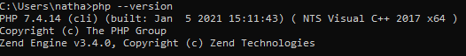

Opção 1 – Método raiz
A ideia é prepararmos um ambiente (no Windows) partindo do marco zero para melhor controle e entendimento do funcionamento da ferramenta.
Para fazer o download do PHP, acesse http://php.net/downloads.php
Na nossa formação, utilizaremos a versão 7.4. Encontre aqui.
Importante: Você deverá saber a arquitetura do seu sistema Windows (86x ou 64x)
Para 86x: Baixe o zip de VC15 x64 Non Thread Safe (2021-Jan-05 18:10:13)
Para 74x: Baixe o zip de VC15 x86 Non Thread Safe (2021-Jan-05 18:10:14)
- Com o arquivo baixado, mova ele para C:, extraia e renomeie a pasta para php;
- Renomeie o arquivo php.ini-development para php.ini
- Crie a 9580 de ambiente no sistema;
- Busque por “variáveis de ambiente” clicando na tecla do windows;
- Escolha Editar as variáveis de ambiente do sistema;
- Na aba Avançado, clique em Variáveis de Ambiente;
- Em Variáveis do Sistema, selecione o valor Path e clique em Editar;
- Crie um novo campo e adicione o valor da variável. No nosso caso, colocamos a pasta (php) na partição principal (C:). Se você seguiu a mesma estrutura, o valor deverá ser “C:\php” (sem as aspas);
- Inicie seu editor de texto favorito como administrador (clicando no ícone com o botão direito do mouse);
- Abra o arquivo C:\Windows\System32\drivers\etc;
- Caso a instrução “127.0.0.1 localhost” (sem as aspas) não exista, adicione no final do arquivo e salve;
- Reinicie seu computador;
- Abra a linha de comando e digite: php –version.
- Caso você tenha realizado todas as etapas, o resultado será esse:
